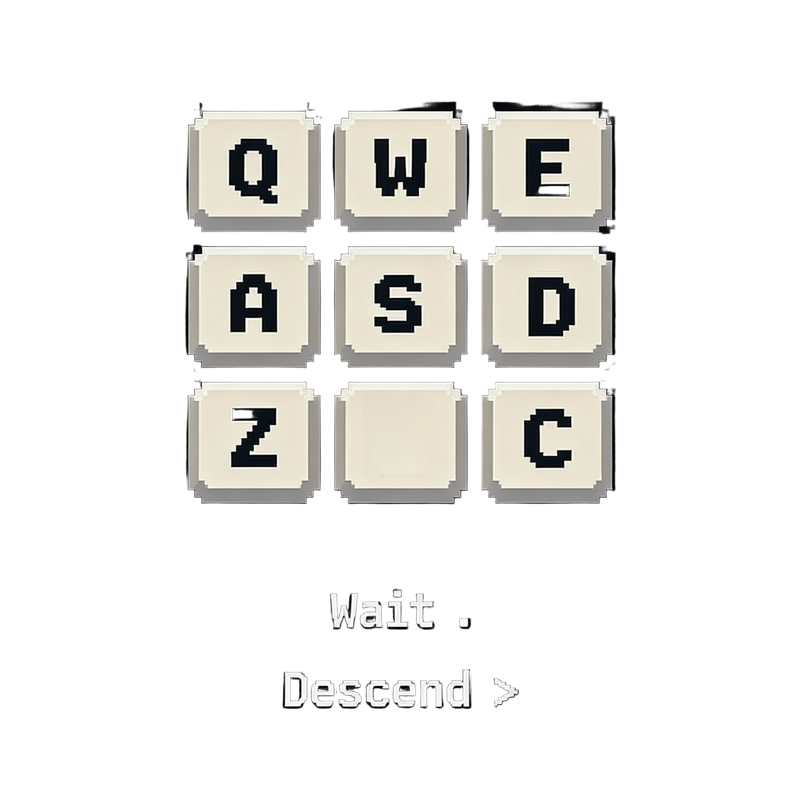

Wait .
Descend >
Heal P
Potions:
0/1/2/3/4
doors #// block chokepoints until opened by bumping,
locked doors X need keys from chests $ (or can be forced),
torches t restore sight (carry 2),
traders T sell goods.